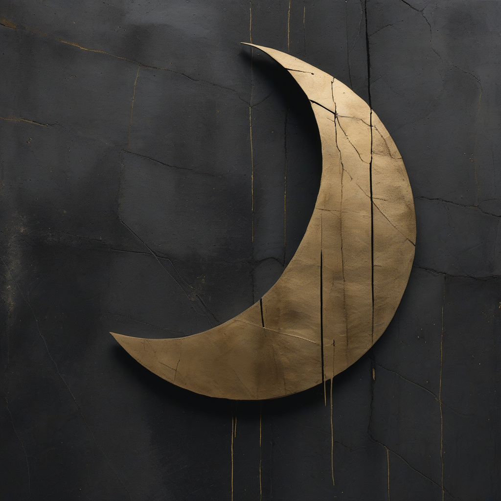
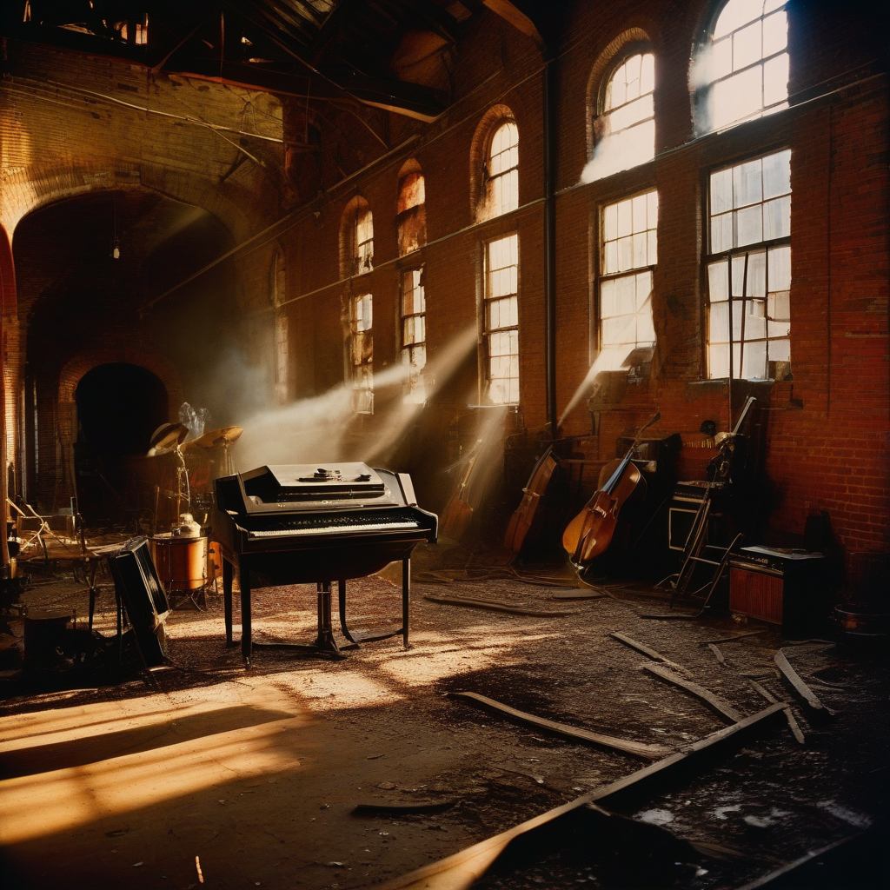
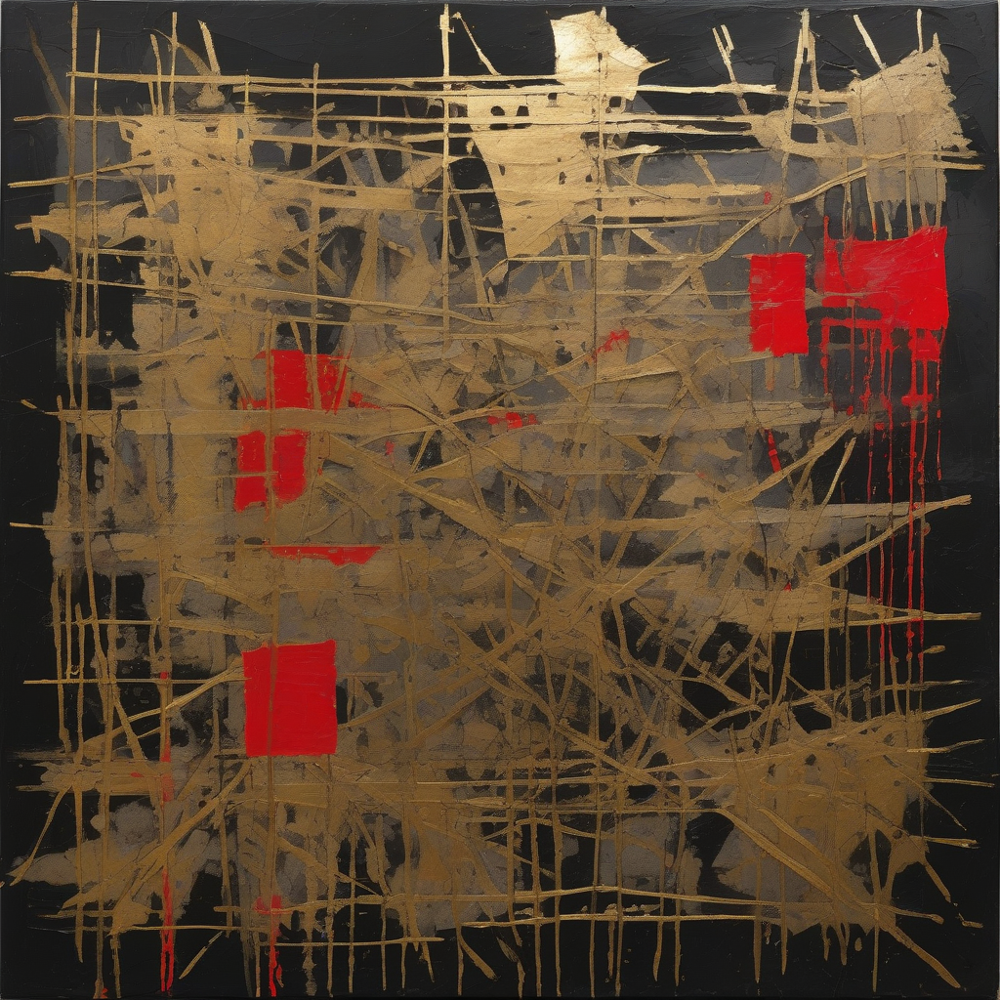
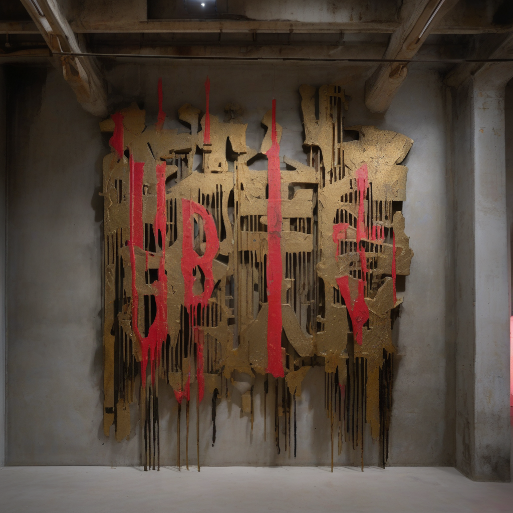

A creative studio, artist collective, and philosophy. Where brutalist precision meets human soul.
We exist at the intersection of technology and authentic human expression. The name comes from the paradox of a sunlit moon — light and darkness, perfection and imperfection, coexisting in the same body.
Each crater is a story of impact and survival. We believe expression is the highest currency. The richest person is the freest to express.
This studio is a cathedral under perpetual construction. A safe space for authentic creative expression in a world of algorithmic echo chambers. We build tools, curate community, and produce work across every medium.
The present does not drift into the past. It meets us in the future, invested or spent.




Every project begins with deep cultural research. We map aesthetic lineages, build keyword libraries, and find the 3% that makes your brand new.
We generate wide and curate ruthlessly. 100 concepts, keep 3. The creative director's job is to kill, not to keep. Reality Serum makes AI output feel human.
Production at scale with zero quality drift. Brand consistency enforced through systems, not just taste. Every asset is art-directed, never templated.